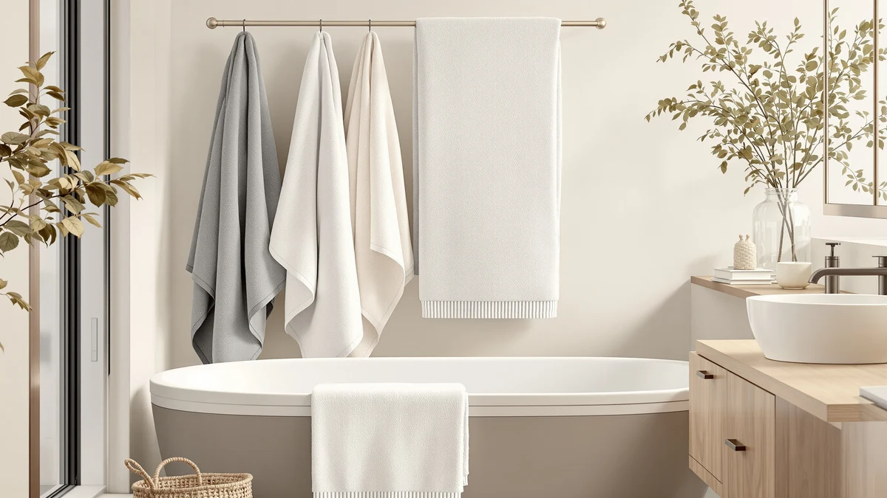

Best Bath Towel Color (2026)
Prices and picks verified as of September 2026. Independent, reader-supported reviews.


Quick Answer
The best bath towel color for most bathrooms is a mid-tone shade like the one on the Cleanbear Bath Towels Soft Shower, since it hides water spots and light staining far better than white while still looking cleaner longer than a deeply saturated dye. If you want something brighter or more neutral instead, the picks below cover white, multi-color, and value-priced sets at different price points.
Our pick: Cleanbear Bath Towels Soft Shower at $29.99 Check Price on Amazon
Bottom line: our top pick is the Cleanbear Bath Towels Soft Shower Towels Set of 2 with at $29.99. The best budget option is the KAHAF COLLECTION 6 Pack Bath Towels Set at $26.99.
Things to Know Before You Buy
- White and pale gray show water spots, hair, and mildew fastest, which is why they're rarely the best bath towel color for busy, high-traffic bathrooms.
- Deeply saturated colors can fade unevenly after repeated washes when the dye isn't fully colorfast, so check owner reviews for complaints about bleeding or fading before buying a large set.
- Ring-spun and combed cotton generally hold dye better over time than lower-grade cotton blends, which matters more once you move past white into deeper shades.
- If you're furnishing a rental or a home you plan to sell, neutral colors like white, light gray, and taupe photograph better and appeal to more people than bold or trend-driven colors.
- Larger multi-piece sets usually offer a wider color lineup than single towels or two-packs, so check the full color list on the product page rather than only the main photo.
The best bath towel color for your bathroom comes down to more than a favorite shade, since how well a color hides everyday spots, resists fading, and matches fixtures you already own matters as much as how it looks on the shelf. A towel that looks sharp in a listing photo can show every water spot within a week, while a more muted color can go two or three uses between washes and still look presentable.
We compared seven cotton towel sets that span the color choices home shoppers actually search for: muted neutrals, crisp white, and wider multi-color options. After weighing material, size, price, and patterns in verified owner reviews, the Cleanbear Bath Towels Soft Shower comes out as the best all-around pick, since its muted color hides light staining without going so dark that it clashes with a bright bathroom.
Not every household wants the same color strategy. Some readers want a classic white set for a hotel-style look, others want a wider color range to match an existing bathroom palette, and some care mainly about the lowest price per towel regardless of shade. The picks below cover each of those approaches, along with the honest tradeoffs that come with choosing a lighter or darker bath towel color.
Why You Should Trust Us
Ilane Tall edits Best Bath Towels and covers bath and home textiles for this site, including the color, material, and durability tradeoffs that decide whether a towel still looks good after a few months of real use. For this guide, we focused specifically on the best bath towel color question rather than general towel quality, since color affects how a towel looks between washes in a way spec sheets rarely mention.
We earn a commission if you buy through the links on this page, but that doesn't decide which sets make this list. Every pick below is one we'd recommend to a reader trying to match a towel color to their actual bathroom and laundry habits.
How We Picked
We started with cotton bath towel sets that list clear color options rather than a single stock photo, since shoppers choosing a bath towel color need to see the realistic range before buying. From there we compared material (100% cotton across every pick here), set size, and price per towel, since a wider color lineup often comes bundled with a bigger set rather than a single towel.
We also weighted verified owner reviews for color-specific complaints: fading, dye transfer onto other laundry, and colors that looked different in person than in the listing photos. Sets with a consistent pattern of those complaints lost points even when the material and price looked competitive.
How We Compared
We do not run a physical testing lab, so we build this comparison from manufacturer specs, current Amazon pricing, and patterns across verified buyer reviews rather than in-person product trials. For each set, we compared material, dimensions, piece count, and price per towel side by side, then read through verified reviews looking specifically for repeated mentions of fading, bleeding dye, or a bath towel color that didn't match the listing photos.
Where several reviewers flagged the same color-related issue, we noted it in that pick's "Flaws but not dealbreakers" section instead of leaving it out.
Our Picks

Cleanbear Bath Towels Soft Shower
What we like
- Muted color tone hides water spots and light staining better than a bright white towel
- 100% cotton construction absorbs quickly without feeling stiff once it air-dries
- At $29.99, it's priced low enough to replace the whole set once the color starts to look tired
Flaws but not dealbreakers
- Some owners report the color reads slightly darker in person than in the listing photos
- At 55 by 27.5 inches, it runs smaller than a true oversized bath sheet
| Material | 100% cotton |
| Size | 55 by 27.5 Inches |
The Cleanbear Bath Towels Soft Shower is our top pick for the best bath towel color for most bathrooms because its muted tone splits the difference between a stark white towel that shows every spot and a dark towel that can look heavy in a small space. At $29.99 for a 100% cotton towel measuring 55 by 27.5 inches, it also gives you room to dry off fully without the bulk of an oversized bath sheet.
Owners report the cotton holds up through repeated washing without the color fading quickly, though a handful of reviews mention the actual shade running slightly darker than the product photos suggest. That's a minor tradeoff for a color that stays looking clean between wash days better than a lighter option would.

KAHAF COLLECTION 6 Pack Bath
What we like
- Lowest per-towel price in this comparison at $26.99 for the full 6-piece set
- 100% cotton material matches the absorbency of pricier picks in this guide
- A full set means every towel in the bathroom matches, instead of mixing colors from separate purchases
Flaws but not dealbreakers
- Reviewers note the color can look slightly less rich than the listing photo after the first few washes
- A 6-piece set includes smaller pieces alongside the bath towels, so fewer full-size towels per set than a dedicated bath-towel-only pack
| Material | 100% cotton |
| Size | (27x54) Inches |
The KAHAF COLLECTION 6 Pack Bath towels are the budget pick in this guide, priced at $26.99 for a full 6-piece, 100% cotton set measuring 27 by 54 inches per towel. For households that want every towel in the bathroom to share the same bath towel color without buying pieces separately, a matched set at this price is hard to beat.
The tradeoff shows up after repeated washing: several reviewers mention the color looking a shade lighter than the photos once the towels have gone through a few laundry cycles, a common issue with lower-priced dyed cotton. If color consistency over years matters more than upfront price, weigh that against the picks further down this list.

QUBA LINEN 100% Cotton Bath
What we like
- 100% cotton at $26.99, matching the lowest price point in this comparison
- Standard 27 by 54 inch sizing fits most towel bars and cabinets without adjustment
- Reviewers describe the color as close to accurate against the product listing
Flaws but not dealbreakers
- Fewer verified reviews than some other picks here, so the color-fastness track record is thinner
- No bath sheet or oversized option currently listed alongside the standard towel
| Material | 100% cotton |
| Size | 27" x 54" |
QUBA LINEN's 100% Cotton Bath towels sit at the same $26.99 price as the KAHAF set, with standard 27 by 54 inch sizing that fits a typical towel bar without hanging awkwardly. It's a straightforward option if you've already narrowed your bath towel color choice down to a neutral shade and simply want a reliable cotton towel at a fair price.
Owner reviews here skew positive on color accuracy, with several buyers noting the towel matches its online photos closely, though the review count is smaller than some of the more established brands in this comparison. That's worth knowing if you're buying a large set sight unseen and want a longer track record before committing.

Luxury White Bath Towel Set
What we like
- Classic white bath towel color matches almost any bathroom without clashing with tile or fixtures
- White cotton can be bleached to remove stains, something colored towels can't handle without fading
- 8-piece set covers a full bathroom, including hand towels and washcloths, in one matching purchase
Flaws but not dealbreakers
- At $39.99, it costs more upfront than the budget cotton sets in this guide
- White shows water spots, hair, and mildew fastest of any color here, so it needs more frequent washing to look fresh
| Material | 100% cotton |
| Size | 8 Pieces Towel Set |
If your priority is a clean, matching look rather than a color that hides stains, the Luxury White Bath Towel Set from White Classic is the pick to consider. At $39.99 for an 8-piece, 100% cotton set, it covers bath towels, hand towels, and washcloths in one purchase, all in the same crisp white.
White remains the one bath towel color you can bleach without worrying about fading, which matters if you deal with makeup, hair dye, or heavy everyday use. The flip side is upkeep: white shows water spots and mildew faster than any other color in this comparison, so plan on washing this set more often than the muted or darker picks above.

American Soft Linen Luxury 6
What we like
- American Soft Linen lists its towels across a wide range of colors, making it easier to match an existing bathroom palette
- 6-piece 100% cotton set covers bath towels and hand towels in a matching color
- Large volume of verified reviews gives a clearer picture of long-term color performance than smaller-run brands
Flaws but not dealbreakers
- At $39.99, it's priced the same as the white set above despite being a smaller 6-piece count
- A handful of reviews mention lint shedding in the first few washes, which can dull a darker bath towel color if not rinsed thoroughly
| Material | 100% cotton |
| Size | 6 Pc Towel Set |
American Soft Linen's Luxury 6 set runs $39.99 for six 100% cotton pieces, and the brand's broader catalog lists its towels across a wider color range than most of the other picks here. That makes it a reasonable stop if you've ruled out stark white and want something closer to a specific shade for your bathroom.
Because American Soft Linen has a large volume of verified reviews, patterns are easier to spot: most reviewers report the color holding up over repeated washing, with a smaller number mentioning early lint shedding that can temporarily dull a darker towel until the first few washes work through it.

Utopia Towels 8 Piece Luxury
What we like
- 8-piece set at $32.99 offers more towels per dollar than the pricier sets in this comparison
- 100% cotton construction keeps absorbency consistent with the more expensive picks
- One matching color across all 8 pieces avoids the mismatched look of buying towels separately over time
Flaws but not dealbreakers
- Some reviewers note the color is slightly less saturated than premium picks after repeated washing
- Individual towels run a bit thinner than the American Soft Linen or White Classic sets
| Material | 100% cotton |
| Size | 8 Pieces Towel Set |
Utopia Towels' 8 Piece Luxury set is the volume pick here, priced at $32.99 for eight 100% cotton pieces, well below the per-towel cost of the White Classic or American Soft Linen sets. For anyone stocking a full bathroom in one matching bath towel color without spending $40 or more, this is the set to compare against.
The tradeoff for the lower price is a thinner towel and a color that a few reviewers describe as fading slightly faster than the premium picks in this guide after regular washing. For a guest bathroom or a household that replaces towels every year or two anyway, that's a reasonable compromise.

American Soft Linen Luxury 4
What we like
- Same wide color lineup as the brand's 6-piece set, useful if you only need four towels
- 100% cotton, 27 by 54 inch sizing matches standard towel bars
- Established brand with a large base of verified reviews to check for color complaints before buying
Flaws but not dealbreakers
- At $39.95, the per-towel price is higher than the 6-piece version from the same brand
- Fewer pieces means less room for rotation if towels are washed only once a week
| Material | 100% cotton |
| Size | 27x54" Bath Towel Set |
This 4-piece version of American Soft Linen's Luxury line costs $39.95 and shares the same 100% cotton material and color lineup as the brand's 6-piece set covered earlier. It's worth considering if a household of one or two people doesn't need six matching towels and would rather pay a bit more per towel for fewer total pieces.
Because it's the same product line as the 6-piece set, the color performance reported in verified reviews tracks closely: consistent shade retention for most buyers, with occasional mentions of early lint shedding. If four towels cover your household, this is a reasonable way to get the same bath towel color options without extra pieces you won't use.
Quick Comparison
| Product | Material | Price | Rating | Best for | Get it |
|---|---|---|---|---|---|
| Cleanbear Bath Towels Soft Shower | 100% cotton | $29.99 | 4 | Best overall bath towel color | View on Amazon → |
| KAHAF COLLECTION 6 Pack Bath | 100% cotton | $26.99 | 4 | Best budget color-matched set | View on Amazon → |
| QUBA LINEN 100% Cotton Bath | 100% cotton | $26.99 | 4 | Best if color accuracy to photos matters most | View on Amazon → |
| Luxury White Bath Towel Set | 100% cotton | $39.99 | 4 | Best classic white bath towel color | View on Amazon → |
| American Soft Linen Luxury 6 | 100% cotton | $39.99 | 4 | Best for matching a specific color palette | View on Amazon → |
| Utopia Towels 8 Piece Luxury | 100% cotton | $32.99 | 4 | Best value 8-piece matching set | View on Amazon → |
| American Soft Linen Luxury 4 | 100% cotton | $39.95 | 4 | Best small-household color match | View on Amazon → |
What is the best bath towel color for hiding stains?
A mid-tone or muted color, like the shade on our top pick from Cleanbear, hides water spots, light staining, and everyday use better than either stark white or near-black colors.
Do darker bath towels fade faster than lighter ones?
Not necessarily, but dye quality matters more as colors get darker or more saturated.
The Competition
A few other bath towel colors and sets didn't make this guide, and the reasons come down to what actually affects how a color performs over time rather than how it looks in a single product photo.
Novelty and trend-driven prints. Several bold, patterned towel sets looked appealing in photos, but pattern dye lots are harder to verify for colorfastness across reviews, and a printed towel that bleeds in the wash can ruin lighter laundry. We left these out in favor of solid, well-documented colors.
Single towels sold without a matching set. A handful of individually sold towels had strong reviews, but without a matching hand towel or washcloth option, they don't solve the whole-bathroom color question this guide is built around.
Deeply saturated colors with thin review histories. A few dark towel colors had limited verified reviews specifically addressing dye transfer and fading, so we couldn't confirm they'd hold their color as reliably as the picks above.